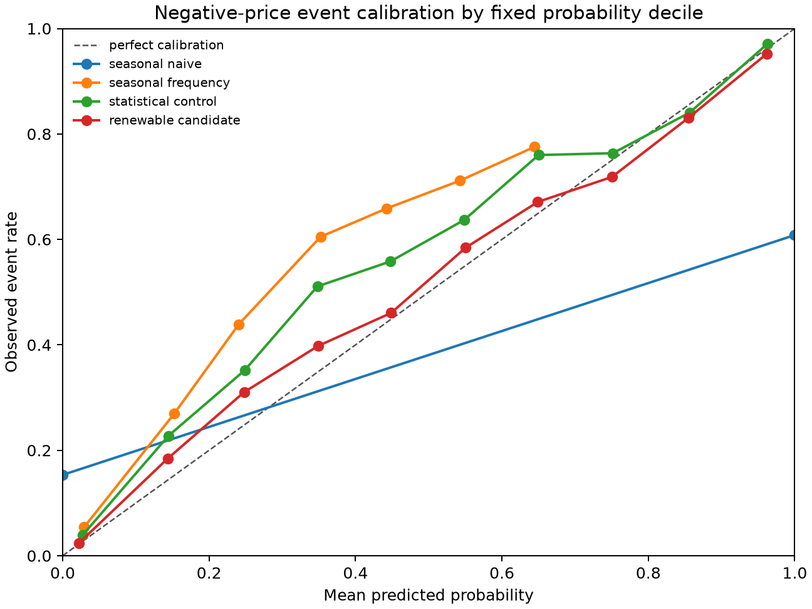

Hourly wholesale price
11.80 A$/MWh lower
SE A$0.87 · 210,399 region-hours
ENERGY ECONOMICS · MARKET RISK · AUSTRALIA
Regional evidence on wind and solar generation, wholesale prices and hourly negative-price forecasts in Australia's National Electricity Market.
1 July 2019 – 30 June 2025 · NSW1 · VIC1 · QLD1 · SA1
01 / ECONOMIC RELATIONSHIPS
A$11.80/MWh lower
Hourly price association per +10 percentage points of wind and utility-solar share, conditional on controls and fixed effects.
Explore associations & regional differences →02 / PROBABILITY FORECASTS
6.38% lower Brier error
Confirmation-period improvement over the price / event / demand control, under the replay’s two-hour data-availability assumption.
Compare forecasts & interpret exposure →01 / ECONOMIC EVIDENCE
For a 10 percentage-point increase in wind and utility-solar share, the model estimates the following associations after accounting for controls and fixed effects. These estimates do not establish causality.
Hourly wholesale price
11.80 A$/MWh lower
SE A$0.87 · 210,399 region-hours
Any negative 5-minute price
3.58 pp higher
SE 0.14 pp · any negative 5-minute price
Within-hour price volatility
5.03 A$/MWh lower
SE A$0.68 · within-hour 5-minute SD
Specification: renewable share is capped at its pooled 99.9th percentile. SE denotes standard error; pp denotes percentage points.
EXPLORE THE TIME SERIES
Choose one focal NEM region. The chart is descriptive: it does not by itself identify an effect.
REGIONAL HETEROGENEITY
Region-specific coefficients for asinh(RRP). Whiskers show 95% confidence intervals.
ROBUSTNESS
Selected pre-specified sample, construction, fixed-effect and covariance checks; outcome is transformed price.
LIMITATIONS
Renewable output and prices both respond to demand, outages, network constraints and bidding. The fixed effects do not isolate an exogenous change in renewable supply, and the available weather data do not support a valid instrument.
Read the identification auditSample
FY2020–FY2025
Unit of analysis
Region × hour
Headline inference
Clustered by AEST week
Displayed data
Compact result tables
02 / MARKET RISK · CONDITIONAL HISTORICAL REPLAY
Adding lagged wind and utility-solar generation reduced confirmation-period Brier error by 6.38% against a logistic price / event / demand control. The target is any negative five-minute price in the next target hour.
Information assumption: realised hourly data are assumed available two hours after the interval starts. Historical release, revision and fuel-label vintages are not fully audited. These results describe a conditional historical replay.
Confirmation · Jul 2024–Jun 2025 · All four regions
Brier improvement vs control
6.38%
Relative reduction in probability error
Candidate calibration bias
−0.66 pp
Mean predicted minus observed event rate
Evaluation observations
35,040
Region-hours; temporally dependent
| Model | Brier score | Mean predicted | Observed rate |
|---|---|---|---|
| 168-hour seasonal naive | 0.22035 | 28.09% | 28.11% |
| Seasonal frequency | 0.15847 | 17.46% | 28.11% |
| Price / event / demand control | 0.08317 | 25.03% | 28.11% |
| Control + wind & solar | 0.07786 | 27.45% | 28.11% |
MARKET PARTICIPANTS
Across all four regions in the selected replay period, compare the average forecast probability with the observed share of region-hours containing a negative five-minute price.
These are period averages, not a forecast for a particular future hour. An event means at least one negative five-minute price; it does not mean the whole hour is negative.
The same event can affect production, demand and contract exposure differently. Estimating its monetary effect would require interval prices, electricity volumes and contractual terms in addition to event probabilities.
TIME-ORDERED EVALUATION
Exact lags of 2, 24 and 168 hours; training-window scaling; four fixed models. Earlier confirmation labels may enter later monthly fits once available. FY2025 also appeared in the original economic study. The fixed gates passed in both periods. Confirmation's seven-day block bootstrap gave a Brier improvement interval of 0.00357–0.00742 (2.5th–97.5th percentiles; 1,000 draws).
RISK INTERPRETATION
Across all four regions in confirmation, summed probabilities imply 9,617.6 expected negative-price event region-hours, compared with 9,850 realised.
These aggregate sequential hourly forecasts. Converting event exposure into money would require electricity volumes, contracts and settlement rules. This study does not estimate trading profit or a year-ahead event count.

Small overall calibration bias does not establish calibration in every probability bin. Bootstrap uncertainty is conditional on this replay and the fixed seven-day block design.
Read the extension report → · Inspect the saved aggregate evidence →
PROJECT MATERIALS